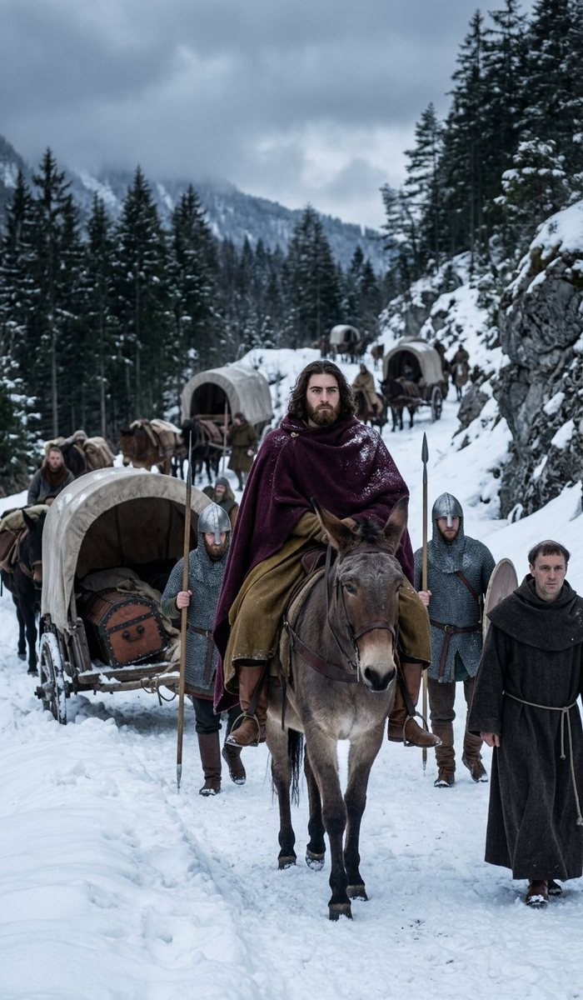
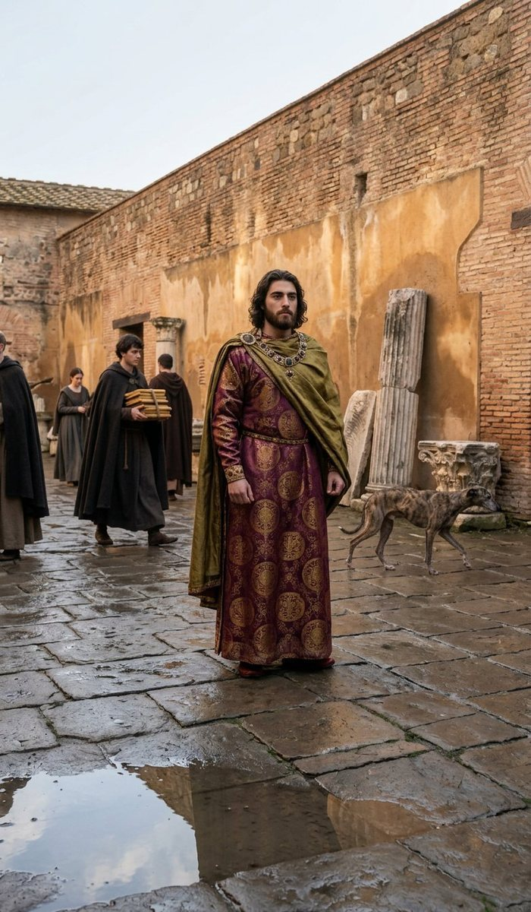
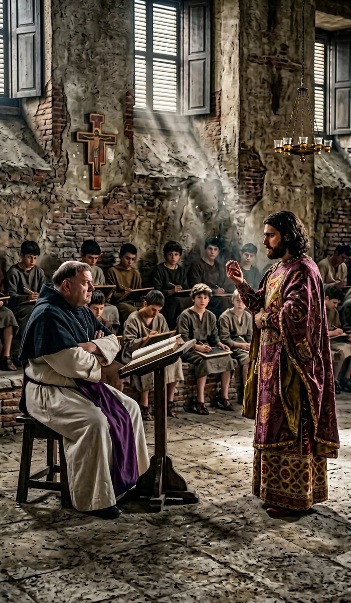
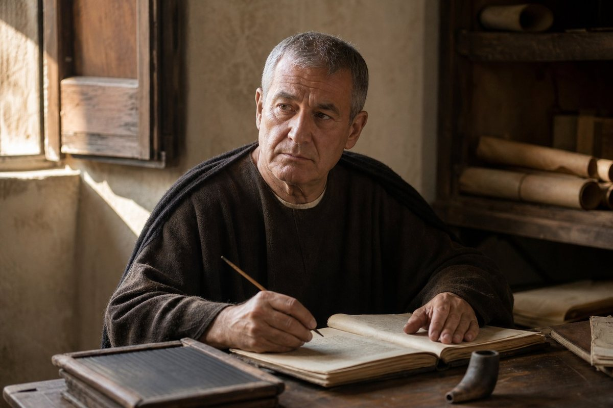
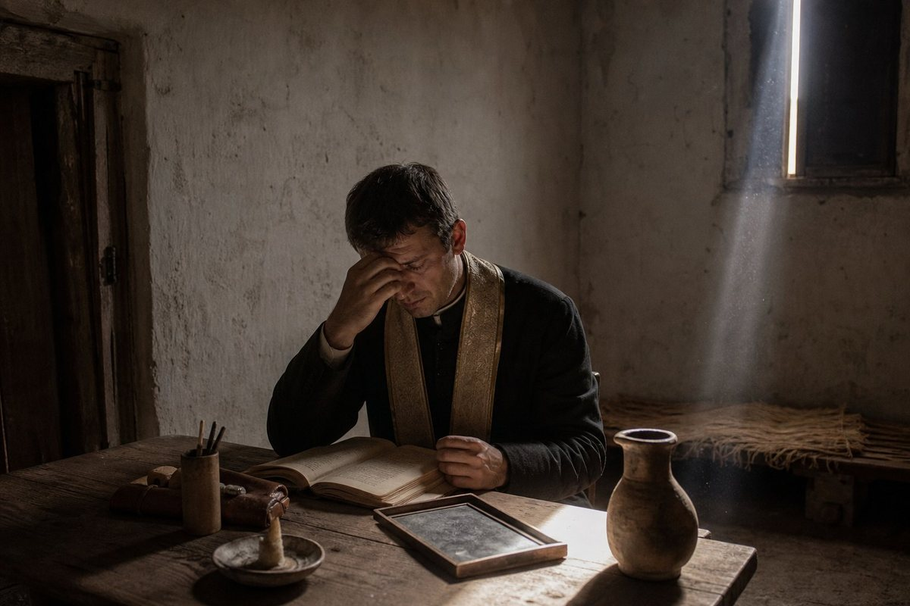
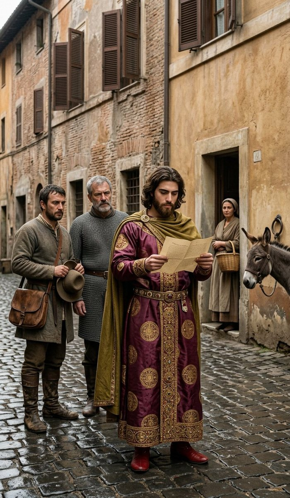
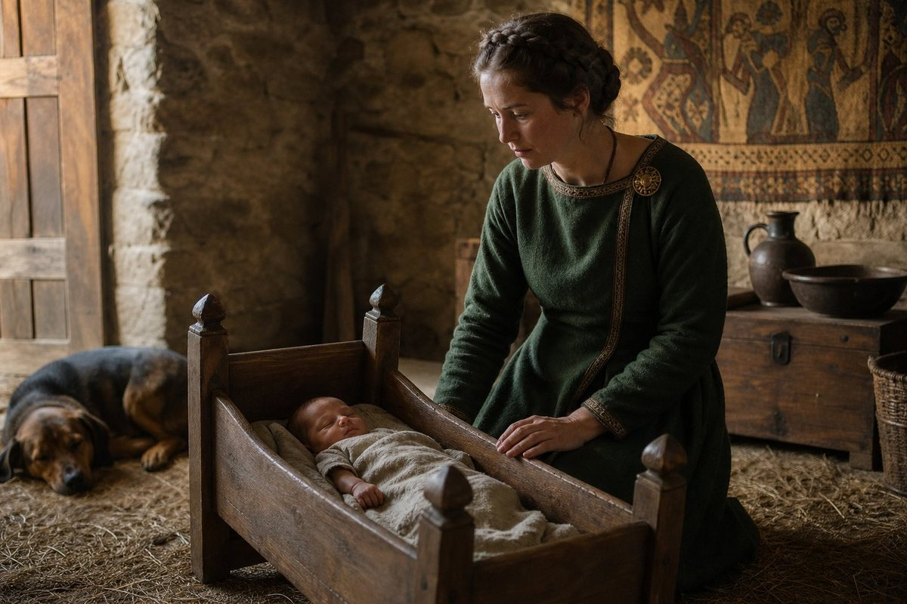
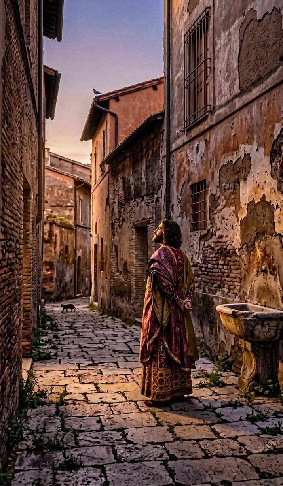
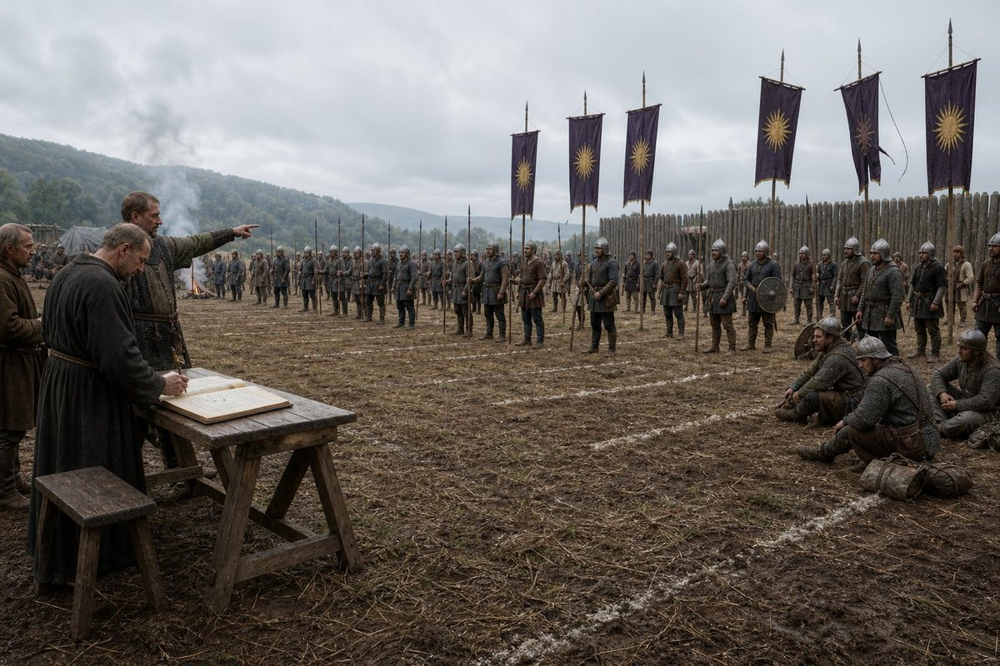

The road south
On the twenty-fifth day of the tenth month of 921 the King of Bavaria left Regensburg for Rome, and I have written that sentence at the end of the last chapter and I am going to write it again here, because a chapter that begins with a departure has to say what the departure cost before it says anything about the road.
He left three wars running. The peasant war in the villages of the south and the east, in which his brother had been killed three days before, and which was not won and would not be won for five months. The holy war on the western border, declared against his father on the fifteenth day of the fourth month of 920 and fought at Neuss and at Sayn and at Veldenz and at Sayn again, and no nearer an end. And the third thing, which was not a war and which the chancery never wrote down: a realm of eighty-eight counties in which four lords had refused an oath, six boys held two thirds of the crown's own land, and a church that had put an army in the field once and was still there.
He left in the winter. That is the first thing I want the reader to hold, because everything else in this chapter is a room with a roof on it, and the road between the room he left and the room he went to was a road over the Alps in the eleventh and twelfth months of the year.
We went by the Brenner. I am not going to pretend the record gives the pass, because it does not; the record gives Regensburg, a date of departure, Rome, and a date of arrival, and a man who puts a pass between them out of his own head is writing a different book. What the record gives is the two dates. The twenty-fifth day of the tenth month of 921, and the eighth day of the second month of 922, and a hundred and six days between them for a journey that a rider does in twenty-five.
A hundred and six days. I have done that sum four times and I keep getting it, and it is the only number in this chapter that I did not have to argue anybody out of. A king's household does not move at a rider's speed; there were carts, there were mules, there were the men who would not go over the mountains after the first snow and had to be sent back, and there was a king who was not in a hurry and had, for the first time since the sixth month of 920, nothing that had to be done by a particular day.
Germano went with him. He is sixty, he has been in this company since before I came into it, and he was at Regensburg in the sixth month of 920 and I was not. He was given the household, the money, the animals and the list of places where a king of Bavaria could sleep, and he did the thing he has done in eleven countries, which is to be dull about it for four months and then produce a clean account.

There is one thing on the road that I will put down because I saw it and it is the whole of what this chapter is about. At a place south of the mountains, in the first week of the second month, we came to a town with a gate and a church and a school in it — a small school, of the kind that exists wherever there are seven boys and a man who can read Latin — and the King of Bavaria got off his horse and went inside and stood at the back and listened for the length of an afternoon.
He was not expected. Nobody had told the town. The master was teaching grammar to eleven boys, in Latin, out of a book that had been copied twice, and one of the boys was asleep, and the King of Bavaria stood at the back with a wet cloak and listened to the second declension for three hours and then gave the master money and left.
Germano asked him on the road what he had got out of it. He said: the master was wrong about the ablative, and nobody in the room knew it, and it did not matter, and that is the whole trade.
I have thought about that answer for a year. There is no lesson in it that a chronicle would write down. But a man who has been examined in a school and who stops at a village school in the Alps to hear the second declension is not a man on a pilgrimage, and the purpose the record gives for this journey is not a pilgrimage either. The purpose the record gives for this journey is a word I have not used in four volumes of this book, and I am going to have to use it: Reflection.
The city, twice
Rome on the eighth day of the second month of 922 was the third time this book has come into that city.
The first was in the second month of 882, when the company came in out of the rain with fourteen hundred men and a chest, and I was not there; I have that from the men who were, and from the second volume, and from a page written at Calafat by a man who could name a hundred and six of twelve hundred and was ashamed of it.
The second was in the twelfth month of 908, when a king of Bavaria came down to be made better at believing and brought his court, his queen's household, eight of the company who could be spared, and a boy of six.
That boy was nineteen years and nine months old on the eighth day of the second month of 922, and he came into the city over the same road from the north, and the city had not changed and he had, entirely, and I was in both parties and I am going to set down what the difference is.
In the winter of 908 the court lodged where it could be lodged and was kept at a distance: a Hellenic king of fifty-eight, with a Greek rite in his chapel and a Latin church that did not want him, was put in the yard of the Vaticano and sold candles. That is the sentence from the nineteenth chapter and I have checked it against my own pages and it is exact. In the second month of 922 the same house, a different king, and this time the city opened a school to him and put three masters on him and made him a student with a name on a roll.
That is not a triumph and I am not going to write it as one. A king who is let into a yard is being kept out of a building; a king who is put on a roll is being put where he can be watched, and given exercises, and marked. The Latin church had learned in fourteen years that the thing to do with a Hellene on the throne of Bavaria is not to keep him at the gate but to examine him.

He went first, before anything else, before the school and before the roll, to the vegetable market by the round church where his father had preached the Wrath of Zeus in the third month of 882 to about forty people, eleven of them his own.
He had been there before. That is the thing that undoes me about this chapter and I will say it plainly: the boy of six was in this city in 909 when his father preached to three hundred people with two hundred of them his own, and he came back in 922 at nineteen and stood in the same market in the second month and said nothing at all, and did not preach, and did not pray, and stayed about the length of time it takes to buy a cabbage.
I asked him, on the way back, whether he had meant to do anything there. He said: no, and then, after a while, that his father had done it in Greek and that was the whole of it, and that a man who preaches in a language nobody in the market has is either a missionary or a man talking to his own household, and his father had been the second, and had known it, and had done it anyway, and he was not going to do it at all.
What a school is
The record says that in this year he attended a university, at the Vaticano, from the eighth day of the second month to the fifteenth day of the eighth month, and that the purpose of the undertaking was Reflection. Those are the record's words and the record's spelling and I am not going to improve them.
A university in the third decade of the tenth century is not what a reader in a later age will have in his head. It has no buildings worth the name. It has masters, and masters have students, and students have to be fed, and the whole of the institution is a licence, a fee, a room, and a list. What Rome had in 922, and what it had had for a hundred years, was the best list in Latin Europe and the worst behaviour, and a king of Bavaria was put on the list in the second month and taken off it in the eighth.
He was examined. I want that written down before anything else in this chapter, because it is the fact the whole of it rests on: a king of nineteen, in the third year of his reign, of a realm of eighty-eight counties, submitted to be examined by men who could fail him, and was.
He was also taught, and this is where I have to be careful, because the school has left no record of what it taught him and the record of the realm has left no record of what he learned, and there is exactly one entry in the whole of these six months that tells me anything about the content of the teaching. It is a poem.
The cat and the mice
The record has a poem in it. This is the only poem in five volumes of this book, and it is four words long in the version I was given, and it goes: a cat hunts mice, the king hunts knowledge.
I am not going to finish it. The reader may think that a man who has written four volumes and can turn a sentence would be able to write three more lines about a cat; I could write thirty; and every one of them would be mine, and this book does not put its own poetry in the record's mouth. I print the line as it stands and I say what I think it is.
I think it is an exercise. I think a master of the school set the students of that term a task — write four lines, keep the metre, do not use a word twice — and I think a king of nineteen sat in a room in Rome in the spring of 922 and wrote a line about a cat, and that the line is the only thing of his own making that has come down to us out of the whole of that year.
And I think it is a good line. A cat hunts mice is a fact about a cat. The king hunts knowledge is a fact about a king, in the way that the chancery writes facts, and putting them side by side is not a comparison, it is a joke, and it is the first joke in this book that I can prove he made.
That is worth more than the debate. I have written this far in the volume, and the reader has had four chapters of a young man who does arithmetic and buries children and gives away counties, and I have said twice that there is no story in him. Here is one thing: at nineteen, in Rome, at a school, being examined by strangers, he wrote a joke about himself in the form of a cat. A man who can do that in the middle of his own education is not a cold man. He is a man keeping his head above the water with a joke.
The twenty-second day of the second month
On the twenty-second day of the second month of 922, fourteen days after he came into the city, the King of Bavaria disputed with Abbot Baldassarre II, and the record says that he defeated him soundly.
Soundly. That is the record's adverb and it is the only adverb of its kind in the entry. Not that he won; that he won soundly, which in the language of these clerks means that the thing was not close and that the loser had not been allowed to make it close.
I have to say what a disputation is before I say what happened in it, because the reader will otherwise imagine a debate as he has seen one and it was nothing like.
Two men in a room, with a proposition, and a chairman, and an audience of the school. No speeches. The first man states, the second objects, and the whole of the art is in the objection: a good objection is one the first man cannot answer without adding something he did not mean to say. There is no winning by volume and there is no appeal to authority that a master will accept, because authority is what is being tested. A disputation is the most honest form of argument that Latin Europe invented and it is also a machine for making a man of nineteen say something in front of witnesses that he will have to live with.
Baldassarre II was an abbot, which means he came into the room with the whole weight of the Latin church behind him, and the proposition was, as far as I can make out from what the school put in writing, about the rites: about whether a man baptized in one rite and ruling in another is in the church or out of it, or — and this is the version I believe — whether the sacrament depends on the minister or on the church, which is the question that has been in the fields of Bavaria since 908.
And the King of Bavaria defeated him soundly, at nineteen, fourteen days after arriving, in Latin, in his fourth language, in front of the school.

I was in the room. I am going to write down the only thing I have ever been able to tell anybody about it that the record does not: he was not clever. I have watched clever men dispute, and cleverness in a disputation looks like a man producing a distinction nobody has thought of; it is fast and it is showy and it makes the audience murmur. He did none of that. He asked the abbot what he meant, four times, in almost the same words, and each time the abbot gave him a slightly larger answer, and by the fourth answer the abbot had said that a rite which a man had been baptized in by a priest who was himself in error was a rite nonetheless, and that was the end of it.
That is not a defeat by argument. It is a defeat by arithmetic, done slowly, in front of witnesses, by a boy who had been told in the first month of his reign that a claim is a word and a word is the only thing this realm is actually made of, and who had spent the winter reading men who had written about words.
Somebody at the school wrote the sentence about the cat that night. I do not know whether it was him or a master who had watched him do it, and I am not going to claim it for him.
Landolfo, twice
The record says he impressed Landolfo twice, and that he aced two assignments, and those two clauses are the whole of what the school put down about six months of teaching.
Landolfo is a master. I have his name and his office and nothing else: not his country, not his age, not his order, not whether he was a Roman or a man from the north who had come down for the list. He is one of perhaps four men in this book of whom the record gives a name and a single act and no character at all, and I have decided to let him stay that way, because a school is a place where a man can be a master and nothing else.
Twice impressed. I have thought about what would impress a master twice in six months, and the answer that survives my own suspicion is dull: the second time is harder than the first. A boy who arrives with a reputation gets one free impression, because the master has been told to expect something; the second impression has to be earned in the ordinary way, in a room, against a text, in front of eleven other students who are not kings.

Two assignments aced. The record uses the word. I do not know what the assignments were, and I am not going to supply them out of the schools I have known, because I have known three kinds of school in my life and none of them were this one. What I will say is that acing an assignment is the least glorious and most useful thing a student can do, and that a king who has been a king for two years and has had nobody mark his work since he was twelve had better enjoy it while it lasts, because from the fifteenth day of the eighth month of 922 there is nobody in the world who is going to mark his work again.
Enzio
And now the other one, because a chapter about a school that only had the successes in it would be a lie of the kind this book does not tell.
His confessor was called Enzio. He is not in the record before this year and he is not in it after, and the whole of what the record has to say about him is one sentence: he failed his examinations four times.
Four times. In six months. There are not four examination days in six months in any school I have ever heard of, which means either that the record is counting attempts and not occasions, or that Enzio was examined more often than the other students, and I have a view on which of those it is and I am going to say it: a priest who follows a king into a school is examined whenever there is an examination, because the school wants to know what the king's own priest knows.
I liked him. I have to declare an interest here, because Enzio is the only man in this chapter who comes out of it worse than he went in and he is the one I would have had a drink with. He was thirty or thereabouts. He had a good voice and no Latin to speak of, and the two things are not unrelated: a man who can say the office beautifully is never made to read the hard authors, and then one day somebody puts a grammar in front of him in a room in Rome and asks him what the optative is for.

The King did not help him. That is the thing I want in the page and it is the thing that made me like the King better rather than worse, and I will explain why.
There was a way to help him. There is always a way: a word to the master, an exercise copied out for him in the evening, a king's confessor quietly moved off the roll and examined in private by a chaplain and passed. Bavaria is a rich kingdom and Rome in 922 was full of men who could be bought for a chest of books, and the King of Bavaria had fourteen thousand eight hundred and seventy-six gold in the chest at Regensburg and I have that number from the record of the fifteenth day of the eighth month.
He did not do it. He let Enzio fail four times, in a room, in public, in front of the students who were there for the same reason, and he went to the fourth failure and sat in the back and afterwards walked home with him.
I asked him about it on the road in the ninth month, because I am sixty-three and I have decided that a man who keeps a ledger may ask one impertinent question a year. He said: if I buy him a pass in Rome, then every examination in Bavaria is a thing that can be bought, and I will have a chancery full of men who were passed because somebody wanted something, and I have spent two years getting the appointments in the church exactly dull and I am not going to spend the money of the realm on making them interesting.
That is the most unpleasant good answer I have ever been given. I have written it down whole. The reader may decide for himself whether a king who will not buy a friend an examination is a just man or a hard one; the record does not decide, and I have watched him for four years and I do not know either.
The customs of the city
The record says he learned the local customs and ceremonies, which is the kind of sentence that a chancery writes when a king has been seen doing something unfamiliar in public and nobody has been able to classify it.
Rome in 922 had a ceremonial life that was not Bavaria's and was not the company's and was not the rite he had been baptized in. There were processions of a kind he had walked in Thessaly in 910 and of a kind he had not. There were the stations, which are a Latin thing, and the relics, which are a Latin thing done to a degree that a Greek finds excessive and which the record's own men had been doing for four hundred years. There were the old ceremonies that nobody could explain: the ones that had been a Roman thing before they were a Christian thing, and which the city performed because the city had always performed them, in the way that a mill goes on turning after the miller is dead.
He learned them. Not as a scholar — the record does not say he studied them — but the way a man learns a country's manners when he is going to have to stand in the middle of them: by being present, by watching, by asking the man next to him what the next thing was.
And here is my reading of it, marked as mine, because it is the one place in this chapter where I am going to say something that the record does not.
A king of Bavaria learning the ceremonies of Rome in the spring of 922 is not a tourist and is not a student. His realm has an Adriatic coast and a patriarch at Aquileia and a county on the lagoon road that he gave to a Norseman in the tenth month of 921. There are eighty-eight counties in his kingdom and a great many of them are full of men whose religion he does not share and whose ceremonies he has never once stood in the middle of. He spent six months in the one city in the world where all the rites of the Latin west are performed in the street, in front of people, by men who cannot be argued with, and he learned how they are done.
I do not say he was planning anything. I say that a man who has been failing to hold a realm of hostile religions together with arithmetic has been given six months in Rome, at the school of the men who hold theirs together with ceremony, and that he did not spend the six months on the ablative.
The fifth day of the fourth month
On the fifth day of the fourth month of 922 the peasant war was won, and the news came to Rome in the fourth week of the month, which is what news from Bavaria to Rome cost in the spring.
I am going to write the two dates down and then say what is not in the record, because I have been at this for four volumes and this is the year it became my method.
The war began on the tenth day of the first month of 921 under a man called Svetozár, and it ended four hundred and fifty days later, and in between it killed a boy of thirteen who was the King's brother, and it was fought in the counties of the crown and the counties of children, and the King of Bavaria was in Regensburg for it, and at Heves in Hungary for it, and on the road to Rome at the end of it.
The record gives one line at the beginning and one line at the end. It gives no battle, no number, no dead, no terms, no ringleaders, no hanging and no pardon. It does not say whether the men of the villages were beaten or bought or starved or given something. Three sections of the last chapter are about a rising that the record has in it twice, in eleven months, as a first line and a last line.
What I can do is the arithmetic of what is not there. A rising of the poor in a country of eighty-eight counties, in the second year of a boy, with a holy war on the western border, ended in the fourth month of 922 with the crown still holding everything it had held in the first month of 921, and with no entry in the record about the terms.
I have seen four of these in my life, in four countries, and I have never yet seen one end without something being given. I do not know what was given in Bavaria in the fourth month of 922. Neither does the record. The difference between those two sentences is the whole of what a history is.

The twenty-third day of the fourth month
On the twenty-third day of the fourth month of 922, at Rome, the King of Bavaria learned that his first child had been born, and the record gives the child's name and the child's sex and nothing else: Sophe, a daughter, to Dusica.
And now the arithmetic, because in this book the arithmetic is always the thing that is almost a story and never quite is.
The King of Bavaria was born on the twenty-third day of the fourth month of 902. On the twenty-third day of the fourth month of 922 he turned twenty, and on that day, in a city seven hundred miles from where he was standing, his daughter was born.
I do not know whether the record's clerk noticed. I notice, and I have decided to print it and let it stand as a coincidence, because it is a coincidence, and a book that turned it into a sign would be a worse book. The same day of the same month, twenty years apart, a birth and a birth, and neither of them chosen by anybody.
He was twenty years old. He had been married for one year and four months. He had a daughter called Sophe and he had held her — no. I do not know that. He was in Rome on the day she was born and he did not see her for another four months at the earliest and probably longer, and every sentence I could write after this one about what that was like is mine and not the record's.

What the record does give, and it is worth more than any scene I could write, is the name. Sophe. It is a Greek name, of the kind a Hellene of Bavaria would put on a daughter in a realm of Germans and Latins, and it is the first Greek name given to a child of this house since the century began. Her mother is called Dusica and the record gives her no house and no country and five words, and her daughter is called Sophe.
I have written in this book that the only thing that undoes the custom of 920 is a son. I have to correct myself on the page, in the way this ledger always corrects itself: a daughter is not the end of a dynasty, but a daughter does something almost as useful, which is to prove that the marriage was a marriage and not a treaty with a bedding attached. In the fourth month of 922 the six boys holding two thirds of the crown's own lands became, in the eyes of every man in Bavaria who cared about such things, the King's brothers rather than the King's heirs, because the King had a child of his own body who was alive.
The first day of the sixth month
On the first day of the sixth month of 922, in Rome, I was made one of the champions again.
I am going to enjoy this paragraph. I am sixty-three years old, I have a bad shoulder and a worse knee, and the record of the Kingdom of Bavaria, on the first day of the sixth month of the year of grace 922, lists among its champions a Greek ledger-keeper who was at that moment seven hundred miles from the nearest horse he owned.
I do not know what the record means. I have never known. There is a list in the chancery and men go on it and come off it, and I have been on it before, in 913 and again in 916, and each time it has happened I have asked somebody in the household what it was for and each time the answer has been the same, which is: it is a list.
Two things are true and I will set them both down. The first is that being on the list has never once required me to do anything. The second is that I am not the only one. The list in that year has names on it that have never been within a mile of a horse, and every one of them is a champion of Bavaria in the way that I am.
It is the funniest thing in this chapter and it is also, if the reader will stay with me, the shape of the realm. A kingdom that cannot make a nation out of its eighty-eight counties has made a list instead. It puts names on a roll and calls them champions, and the roll is not a lie exactly; it is a ceremony, and ceremony is what this kingdom has instead of a country.
The fifteenth day of the eighth month
On the fifteenth day of the eighth month of 922 the record stops, and I am going to deal with the last thing the school did before I deal with what was in the ledger that day.
The record says — and this is a sentence I have read forty times — that Chairestratos and the second Edouinos no longer answer to the king directly, that they still hold Falkenstein and Trier, and that they hold them under dukes now, and that the record does not say why.
Chairestratos is sixteen. He was born at Linz on the third day of the first month of 906 and he was given Falkenstein in the partition of the seventh month of 920, when he was fourteen, having been a duke since he was four and never having been to Krain in his life. He is the eldest of the King's brothers and the one with the most.
The second Edouinos is five. He was born at Regensburg on the eighth day of the first month of 917, and he is called Edouinos because his father was called Edouinos and because a second son of that house was given the name, and I have written twice in this book that nobody in the record says why and that I am not going to invent it. He was given Trier in the same afternoon in the seventh month of 920, at the age of three, and Trier is a long way from Regensburg and further from Rome.
So in the eighth month of 922 two counties of the crown's gift pass out of the King's direct hand and into the hands of dukes, and the record does not say why, and I am not going to invent a reason. What I will do is what I have done for four volumes, which is to put the thing beside the other things.
The custom of 920 gave six boys six counties and took two thirds of the crown's own lands out of the crown's hand in an afternoon. In the twenty-fifth month after that afternoon, two of those boys stop answering to the King directly. Nobody has been killed. Nothing has been revoked. A boy of sixteen who has never seen his county is put under a duke, and a boy of five is put under a duke, and the realm has, in the space of one line of the record, become a place where the King of Bavaria's brothers are other men's vassals.
There is a reading of this that is generous and a reading that is not, and I am going to give both and choose neither, because the record does not.
The generous reading is that a boy of sixteen cannot govern Krain and a boy of five cannot govern Trier, that every honest man in the hall knew it in 920, and that in 922 somebody finally did the dull correct thing and put them where a duke could look after them, with their titles intact and their incomes paid.
The other reading is that the crown has begun to lose the argument of the seventh month of 920, and that a county which does not answer to the king directly is a county which will, in fifteen years, answer to somebody else, and that the six boys were never the danger and the dukes always were.
I do not know which it is. I know that on the fifteenth day of the eighth month of 922 the King of Bavaria was in Rome, and that the men who arranged it were in Bavaria, and that the record of the arrangement is one clause long and gives no reason, and that a king who leaves a realm for ten months comes home to a realm that has been running without him and has run in a direction.
The sixteenth day, and the ledger's page
The record of the realm stops on the same day, and the page it stops on is the most useful page in the whole of this volume, because it is the only one in which a clerk writes down what the Kingdom of Bavaria was, in numbers, without an argument attached.
Eighty-eight counties. That is the same eighty-eight as the day his father died and the same eighty-eight as the day of the coronation and the same eighty-eight as the end of 921; two years, three wars, two risings, a partition, a tournament and a dead brother, and the map has not moved a county in any direction.
The eighth largest realm out of six hundred and thirty-three. In the seventh month of 920 it was the seventh of six hundred and thirty-six. That is the only arithmetic in this book I have ever found that made me put the pen down: the Kingdom of Bavaria did not get smaller and it did not lose a county, and it went from seventh to eighth, because three other realms in the world grew.
Fourteen thousand eight hundred and seventy-six gold in the chest.
I have looked at that number for a long time. There is no other figure like it in five volumes. This book has counted men, counties, days, dead and miles, and it has never once been able to count money, because the company's accounts were Pramda's and mine and the realm's accounts are a chancery's and neither of us ever wrote a total in a place where I could see it. Fourteen thousand eight hundred and seventy-six gold, at the fifteenth day of the eighth month of 922, in the third year of a king of twenty.
The war is still open. That is the fourth line of the page and it is a line the clerk had to write, because a clerk writes what is in front of him on the day, and the holy war on the western border had been running for two years and four months and was still open on the fifteenth day of the eighth month, and the King of Bavaria was in Rome, twelve days' ride from where a war was.
And then the neighbours, which the record lists with their ages, as it lists them every year: France, Carloman, fifty-four. Poland, Uniedrog, forty-seven. East Francia, Karl, forty-three. Frisia, Rorgon, thirty-two. Hungary. Great Moravia. Venice. Verona.
Eight names. I have read that list in every chapter of this volume and I have never once commented on it, and I am going to comment on it here because of the ages. Carloman fifty-four, Uniedrog forty-seven, Karl forty-three, Rorgon thirty-two. Those are not boys. There is not one child on that border, and on this side of it there is a king of twenty, six brothers under sixteen holding counties, and a chancery that has been writing his name without the article since he was eighteen.
The seventeenth day of the eighth month
On the seventeenth day of the eighth month of 922, two days after the school finished with him, the record has one word. It is not a war and it is not a grant and it is not a death. It is a memory, and the memory is: Visited Rome.
The record keeps memories. I did not know that when I began this book and I know it now, and I have never been able to establish what makes a thing a memory rather than an entry. He remembers the city in the eighth month of 922, two days after he has finished being examined in it, and the record puts it down as one of the things that a man carried out of that year.
I was with him on the seventeenth day of the eighth month. I am not going to write a scene about it, because a scene about a man remembering a city is exactly the sort of writing that puts a false floor in a history, and because what I have instead is better: a date, an entry of two words, and seven hundred miles.

What I will say is the arithmetic of the memory, which is this. He was six in the winter of 908 and he was in this city for five months with a father in the middle of his reign and a court that had come south to be seen believing, and the thing he has chosen to remember, at twenty, is not the market and not the sermon and not the yard at the Vaticano where the candles were sold. It is the city. The whole of it, in two words, as though a city could be one thing.
I have a memory like that. It is of a road above the Gulf of Corinth in the year 866 and it is not of any person on it.
The first day of the tenth month, the war
On the first day of the tenth month of 922 the holy war for the Kingdom of East Francia ended, and the defenders held.
I am going to give the whole of the entry and then unpack it, because it is the end of something that this book has been carrying since the fifteenth day of the fourth month of 920.
Friedrich the Forgetful declared a holy war for the Kingdom of East Francia in the fourth month of 920, against a realm whose king died ten weeks later. His son Karl, who is forty-three and who is on the neighbours list of the fifteenth day of the eighth month, inherited the war the way a man inherits a debt, and fought it at Mainz in the eighth month of 920 and at Neuss and at Sayn and at Veldenz and at Sayn in the year after, and on the first day of the tenth month of 922 it ended with the defenders holding, which is to say that the Kingdom of East Francia did not fall, and Bavaria did not take it, and nobody won.
Two years and five months. Six battles in the record and numbers for two of them. Not one result stated for any of them until the last, and then a result that is a sentence about the defence.
And with that, all of the old King's wars are closed.
I want to write this paragraph carefully because it is the sort of thing a man writing near the end of a book is tempted to make too much of. Edouinos Silviades fought four great wars as a king: Slavonia, declared in the ninth month of 912; Friuli, declared in the eighth month of 913; the war for Moravia; and this holy war, which was declared against him and not by him. Every one of them is now ended. Three of them he won in his lifetime and the fourth was inherited by his son's enemy's son and has ended with nobody holding anything, two years and five months after his death, at a school in Rome, on a page of the ledger that a clerk wrote on a Tuesday.
There is no last war of Edouinos the Pilgrim. There is a war that outlived him, ran through his son's reign, killed men whose names are not in the record, was fought four times at the same crossing in a year, and stopped, and the reason it stopped is not in the record at all. Wars end for money, for weather, for a lord's death, for a bishop's letter, and each of those is a story, and the record gives me the one thing that is not a story, which is a date.
The King of Bavaria heard about it in Rome in the fourth week of the tenth month, and he said nothing, and then in the evening he said the thing he says: good. Who commanded.
Nobody could tell him that either.
The first day of the tenth month, the regiments
And on the same day, in the same entry, the record has the other thing, and it is not a battle.
The first day of the tenth month of 922: the Armored Footmen of Bavaria are reduced from eight regiments to three. The Ayrudzi are reduced from eight to three. The Zhanmadao are reduced from eight to three. More than thirteen hundred men are lost in the month, and no battle is fought in it.
I am going to put that in the plainest words I have. In one month, with no battle, the Kingdom of Bavaria lost fifteen regiments and more than thirteen hundred men, out of three corps that had eight regiments each, and the record does not say where they went, whether they were killed, disbanded, deserted, starved, paid off or taken by somebody else, and I am not going to invent it.

What I can do is what I have done with every silence in this book, which is to say what the silence is next to.
The King of Bavaria had been out of his realm for eleven months on the first day of the tenth month of 922. In that eleven months a peasant war had ended without terms in the record, two of his brothers had stopped answering to him directly, and a holy war had ended by itself. And in the same month, three corps of his own army each lost five regiments, in a country he was not in, without a battle.
I have one reading and it is mine and I mark it as mine and the reader should hold it at arm's length, because it is a reading of a silence and not of a fact. A regiment is not a thing men carry in their hands; it is a thing that exists because somebody has paid for it, and it is written into the ledger as eight because eight is what the crown maintained. An army that loses five regiments out of eight in a month without fighting is an army whose regiments have been broken up — reassigned, split among the great lords, parcelled out to counties, put into the hands of the men who now hold Falkenstein and Trier under dukes. That is what the partition of the seventh month of 920 would look like, two years and three months later, if it had finally reached the army: the crown's own strength going out of the crown's hand, not by a battle and not by a defeat, but by an afternoon in a hall and a rule applied by honest men.
That is the book's reading. The record's reading is eight regiments became three. I have given both, and in a hundred years only one of them will be in the book, and I hope it is the first and I know it will be the second.
The last page
I am writing this in Rome in the eleventh month of 922, in a hired room, with the ledger on a table and my hand worse than it was in the spring, and I am going to finish the chapter the way I have finished every chapter of this volume, with the four subjects and what this year did to them.
The first was the old King's last years and his death. They were done in the fourth volume, and this year closed the last thing he left open, which was a war, and closed it without a result, in the hands of two men neither of whom was his son.
The second was the rise of Antiphates. I have written five chapters of a boy becoming a king and this is the chapter in which he is neither. In Rome, at nineteen and twenty, in a school, he was a student with a name on a roll, examined by men who could fail him, disputing with an abbot on the twenty-second day of the second month and winning soundly, writing a joke about a cat, listening at the back of a village school in the Alps, and failing — no. Not failing. Watching his own priest fail, four times, and refusing to buy him out of it.
That is a rise of a kind and it is not the kind anybody writes a chronicle about. It is a king learning the two things that Bavaria could not teach him: how to be examined, and how to sit in the middle of somebody else's ceremonies without correcting them.
The third was the rebellion. It ended in the fourth month of 922 and the record gives it one line, and I have given it a section and an argument about the argument that is not in the record, and it is the thinnest thing in the chapter because the record left it thin. A rising that killed the King's brother ends up as a date. I have written that sentence as an accusation and it is not one: it is what a ledger is.
The fourth was the precarious kingdom, and this is the year the precariousness stopped being a figure of speech and became a set of numbers on a page. Eighty-eight counties. Eighth of six hundred and thirty-three, down one place without losing a county. Fourteen thousand eight hundred and seventy-six gold. Two brothers under dukes. Fifteen regiments gone in a month without a battle. A war that ended by itself. And a king who spent ten months of the year seven hundred miles away from all of it and came home in the tenth month to a realm that had been running without him.
I am going to say the thing I have been circling since the first page of this chapter. His father could not have done this year. His father would not have gone to Rome in the winter of 921 with three wars running; he would have gone to the villages, or to the border, and been seen, and made a story out of it, and the story would have held the realm together and it would have cost him the school. The son went to the school. He left the wars to the men who fight wars, the villages to the household, the counties to the custom, and the army to whatever the army was doing in the tenth month of 922, and at the end of the year the realm was still eighty-eight counties and the King of Bavaria could read Latin better than he could in the spring and had a daughter called Sophe.
There is no story in that either. But I have watched the two of them now, the father for twenty-two years and the son for two, and I will put down the one difference that I am sure of: the father spent his reign making a story that would hold a kingdom together, and the son is spending his making himself into a man who can hold it without one.
Whether that works is not in the record. It is not in the ledger. I am sixty-four years old and I will not see the answer, and I have written this book for four volumes on the principle that the answer is not my business.
*Here ends the third chapter of the fifth volume, at Rome in the eleventh month of the year of grace 922, in the hand of Laurentios of the company, born above the Gulf of Corinth in 858, who came into this city for the first time in the twelfth month of 908 as a man of fifty carrying a boy of six, who came into it the second time on the eighth day of the second month of this year as a man of sixty-three carrying a ledger, who was listed among the champions of Bavaria on the first day of the sixth month without being asked, who failed nothing in Rome because he was not examined in it, and who has now written the whole of a year in which the only fighting he saw was a cat hunting mice.*